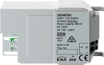
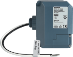
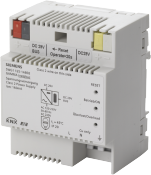
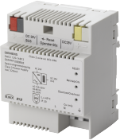
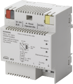

Accessories product description
The power supply units provide the system power necessary for KNX PL-Link.
NOTICE

Equipment damage due to parallel operation of internal and external KNX power supply
Operating internal and external KNX power supply in parallel may lead to severe damage of the automation station.
- If an external power supply is used, make sure the internal KNX power supply is turned off.
 | RL 125/23, Decentralized power supply
Order number: 5WG1 125-4AB23 Download data sheet: 5WG11254AB23 |
 | JB 125C23, decentralized power supply
Order number: 5WG1 125-4CB23 Download data sheet: 5WG11254CB23 |
 | N 125/02, Power supply unit
Order number: 5WG1 125-1AB02 Download data sheet: 5WG11251AB02 |
 | N 125/12, Power supply unit
Order number: 5WG1 125-1AB12 Download data sheet: 5WG11251AB12 |
 | N 125/22, Power supply unit
Order number: 5WG1 125-1AB22 Download data sheet: 5WG11251AB22 |